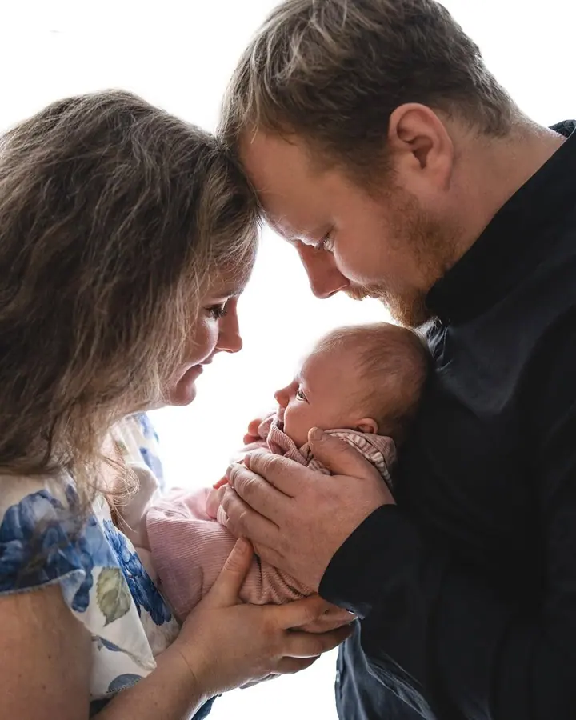
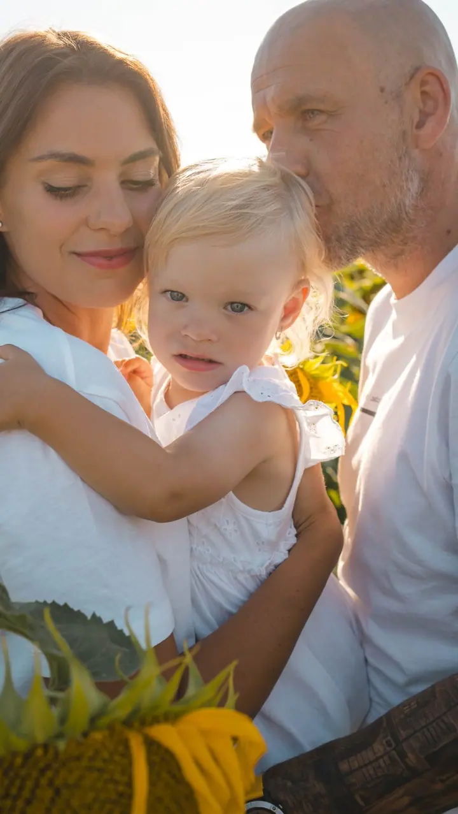
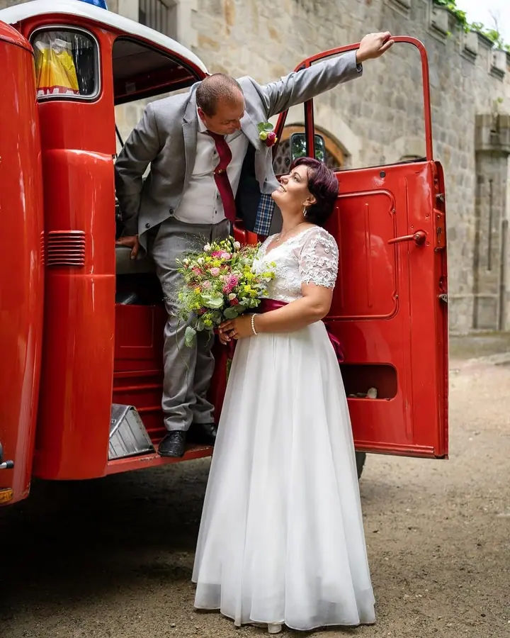
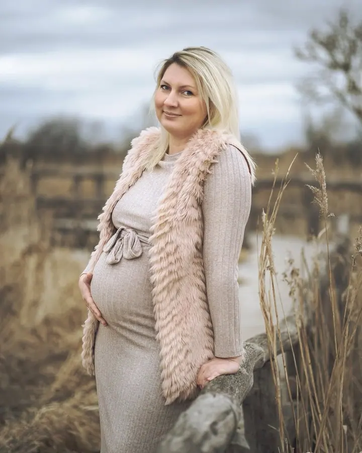

Rodinné, párové a těhotenské focení
Fotím v ateliéru v Českých Budějovicích nebo venku v přírodě. Na výběr je kratší MINI focení na 20 minut nebo STANDARD na 30 až 50 minut.

Jmenuji se Nikola Chrtová a v Českých Budějovicích a po celé republice fotím rodiny, nejmenší miminka i svatby. Na focení u mě nikam nespěcháme, v klidu a pohodě vznikaj…
Rezervovat termínAhoj, jsem Nikča, fotografka z Českých Budějovic. Svět umění mě přitahoval odmala, a z focení se nakonec stala moje vášeň i životní cesta. Nejraději fotím těhotenství, novorozence, rodiny, svatby a portréty, protože se v nich nejvíc ukazují opravdové emoce.


Každé focení je pro mě výjimečné. Záleží mi na příjemné atmosféře, protože jen v ní vznikají přirozené a krásné fotky. Fotím venku v přírodě i ve svém ateliéru v Budějovicích a pokud máte vlastní nápady, vždycky pro ně najdu prostor.
Fotky upravuji svým stylem a citem pro detail, barevně i černobíle. Mým cílem je, abyste se na nich viděli přesně tak, jak si přejete: šťastní, autentičtí a spokojení. Jsme lidi a na všem se dá domluvit, hlavně ať je celé focení pohodové.
Co fotím
Fotím v ateliéru v Českých Budějovicích nebo venku v přírodě. Na výběr je kratší MINI focení na 20 minut nebo STANDARD na 30 až 50 minut.
Jemné fotky miminek, které upravuji pečlivě a s přirozeným retušem. Fotky si můžete nechat i vytisknout.
Svatby fotím reportážně. Vedle všeho podstatného zachytím i emoce, pohledy, detaily, rodinu a přátele. Kterou část dne budu fotit, si spolu domluvíme.
Portrétní focení jednoho člověka v ateliéru nebo venku. Chci, abyste se na fotkách viděli přesně takoví, jací chcete být.
Postup
Napište mi, co si představujete. Společně vybereme balíček, termín a místo, ať už to bude ateliér v Českých Budějovicích, nebo příroda.
Fotíme v klidu a bez spěchu. Pokud máte vlastní nápady, řekněte mi je předem, prostor pro ně vždycky najdeme.
Pošlu vám náhledové album a fotky, které chcete upravit, si vyberete sami.
Upravené fotky vám pošlu v elektronickém albu, odkud si je můžete stáhnout nebo objednat k vyvolání. U rodinného focení do 4 týdnů, u svatby nejpozději do 6 týdnů.
Otázky
Rodinné, párové a těhotenské focení začíná na 1 300 Kč za MINI balíček s 5 upravenými fotkami, STANDARD s 10 fotkami stojí 2 000 Kč. Novorozenecké a portrétní focení je za 1 600 Kč a svatbu fotím za 1 800 Kč za každou započatou hodinu.
V ateliéru v Českých Budějovicích nebo venku v přírodě. Za cestu mimo Budějovice počítám 8 Kč/km, svatby fotím po celé ČR.
Reportážně. Fotím vše, co bych si sama chtěla nechat na památku: všechno podstatné a k tomu emoce, pohledy, detaily, rodinu a přátele. Před svatbou se můžeme potkat osobně nebo přes videohovor.
Neupravené fotky nedávám, odevzdávám jen fotky upravené mým stylem. Pokud máte přání ohledně retuše nebo barev, řekněte mi je prosím předem.
